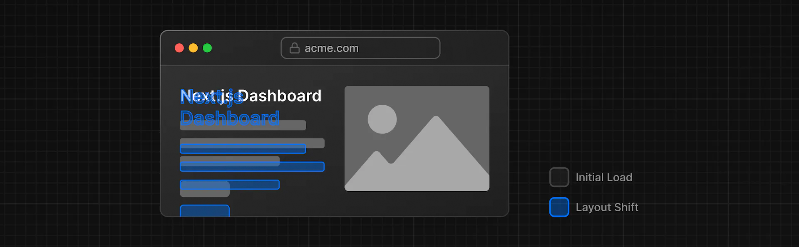
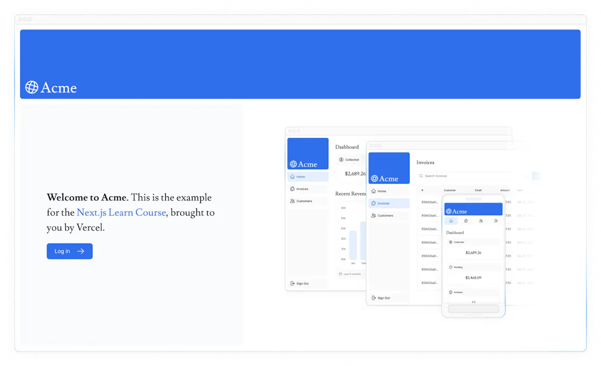

3フォントと画像の最適化
前の章では、Next.jsアプリケーションのスタイル設定方法を学びました。引き続き、カスタムフォントとヒーロー画像を追加して、ホームページを作成してみましょう。
この章では...
この章で取り上げるトピックは以下の通りです。
-
next/fontでカスタムフォントを追加する方法。 -
next/imageで画像を追加する方法。 - Next.jsでフォントと画像を最適化する方法。
フォントを最適化する理由
フォントはウェブサイトのデザインにおいて重要な役割を果たしますが、プロジェクトでカスタムフォントを使用すると、フォントファイルの取得と読み込みが必要になり、パフォーマンスに影響を与える可能性があります。
累積レイアウトシフトは、Googleがウェブサイトのパフォーマンスとユーザー体験を評価するために使用する指標です。フォントの場合、レイアウトシフトは、ブラウザが最初にフォールバックフォントまたはシステムフォントでテキストをレンダリングし、それが読み込まれるとカスタムフォントに入れ替わるときに発生します。この入れ替えによって、テキストのサイズ、間隔、レイアウトが変更され、周囲の要素が移動することがあります。

Next.jsは、next/fontモジュールを使用すると、アプリケーション内のフォントを自動的に最適化します。ビルド時にフォントファイルをダウンロードし、他の静的アセットと一緒にホストします。つまり、ユーザーがアプリケーションにアクセスしたときに、パフォーマンスに影響するようなフォントの追加ネットワークリクエストが発生しません。
ここで問題です
Next.jsはどのようにフォントを最適化するのですか？
- パフォーマンスを向上させる追加のネットワーク要求が発生する。
- すべてのカスタムフォントを無効にします。
- 実行時にすべてのフォントをプリロードします。
- フォントファイルを他の静的アセットと一緒にホストするので、追加のネットワーク要求がありません。
答え
"4. フォントファイルを他の静的アセットと一緒にホストするので、追加のネットワーク要求がありません。"
Next.jsはビルド時にフォントファイルをダウンロードし、他の静的アセットと一緒にホストします。つまり、ユーザーがアプリケーションにアクセスしたときに、パフォーマンスに影響するようなフォントの追加ネットワークリクエストは発生しません。
主要フォントの追加
アプリケーションにカスタムGoogleフォントを追加して、その動作を確認してみましょう！
app/uiフォルダに、fonts.tsという新しいファイルを作成します。このファイルは、アプリケーション全体で使用されるフォントを保持するために使用します。
next/font/googleモジュールからInterフォント をインポートしてください。次に、どのサブセットを読み込むかを指定します。この場合は'latin'です：
| app/ui/fonts.ts | |
|---|---|
最後に、/app/layout.tsxの
要素にフォントを追加します：| app/layout.tsx | |
|---|---|
<body>要素にInterを追加することで、アプリケーション全体にフォントが適用されます。ここでは、フォントを滑らかにする Tailwind antialiased クラスも追加しています。このクラスを使う必要はありませんが、いいアクセントになります。
ブラウザに移動してdev toolsを開き、body要素を選択します。スタイルの下にInterとInter_Fallbackが適用されているのが見えるはずです。
練習セカンダリフォントの追加
アプリケーションの特定の要素にフォントを追加することもできます。
次はあなたの番です！fonts.tsファイルで、Lusitanaというセカンダリーフォントをインポートし、/app/page.tsxファイルの
要素に渡します。前と同じようにサブセットを指定するだけでなく、フォントの太さも指定する必要があります。
ご自身で考えて実践してみてください。できたら、下のコード・スニペットを展開して解決策を見てください。
Note
フォントに渡すウェイトオプションがわからない場合は、コードエディタでTypeScriptのエラーを確認してください。 Google Fontsのウェブサイトにアクセスし、Lusitanaを検索して、どのようなオプションが利用可能かを確認する。 複数のフォントを追加するためのドキュメントと、オプションの完全なリストを参照してください。
答え
| app/ui/fonts.ts | |
|---|---|
最後に、<AcmeLogo />コンポーネントもLusitanaを使用しています。エラーを防ぐためにコメントアウトされていますが、コメントアウトを解除してください：
| app/page.tsx | |
|---|---|
これで、アプリケーションに2つのカスタムフォントが追加されました！次に、ホームページにヒーロー画像を追加してみましょう。
画像を最適化する理由
Next.jsは、トップレベルの/publicフォルダの下に画像などの静的アセットを提供できます。publicフォルダ内のファイルは、アプリケーション内で参照できます。
通常のHTMLでは、次のように画像を追加します：
しかし、これは下記のことを手動で行わなければならないことを意味します：
- 異なる画面サイズに対応できるようにする。
- デバイスごとに画像サイズを指定する。
- 画像の読み込み時にレイアウトがずれるのを防ぐ。
- ユーザーのビューポート外にある画像を遅延ロードする。
画像の最適化は、ウェブ開発における大きなトピックであり、それ自体がひとつの専門分野とも言えます。これらの最適化を手動で実装する代わりに、next/imageコンポーネントを使用して画像を自動的に最適化することができます。
<Image>コンポーネント
<Image>コンポーネントは、HTMLの<img>タグを拡張したもので、以下のような画像の自動最適化機能を備えています：
- 画像の読み込み時に自動的にレイアウトがずれるのを防ぐ。
- 画像をリサイズして、ビューポートの小さいデバイスに大きな画像を送らないようにする。
- デフォルトでの画像の遅延読み込み（画像はビューポートに入ると読み込まれます）。
- ブラウザがサポートしている場合、WebPやAVIFのような最新のフォーマットで画像を提供する。
デスクトップ・ヒーロー画像を追加する
<Image>コンポーネントを使いましょう。publicフォルダの中を見てみると、hero-desktop.pngとhero-mobile.pngの2つの画像があることがわかります。この2つの画像は全く異なるもので、ユーザーのデバイスがデスクトップかモバイルかによって表示されます。
/app/page.tsxファイルで、next/imageからコンポーネントをインポートします。そして、コメントの下に画像を追加します：
ここでは、幅を1000ピクセル、高さを760ピクセルに設定しています。レイアウトのずれを防ぐために、画像の幅と高さを設定するのは良い習慣です。これらはソース画像と同じアスペクト比でなければなりません。
また、モバイル画面では画像をDOMから削除するためにhiddenクラスが、デスクトップ画面では画像を表示するためにmd:blockが指定されていることにお気づきでしょう。
これであなたのホームページはこのようになるはずです：

演習: モバイル用のヒーロー画像の追加
次はあなたの番です！先ほど追加した画像の下に、hero-mobile.png用の<Image>コンポーネントをもうひとつ追加します。
- 画像の幅は560ピクセル、高さは620ピクセルにします。
- モバイル画面では表示され、デスクトップでは非表示になるはずです。デスクトップとモバイルの画像が正しく入れ替わっているかどうかは、開発ツールを使って確認できます。
ご自身で考え、準備ができたら下のコード・スニペットを展開して解決策を見てください。
答え
Tailwind CSS の Responsive Designの機能を利用すると、画面サイズに合わせて表示・非表示や、スタイルを変更することが容易にできます。
- モバイル向け
- デスクトップ向け
素晴らしい！あなたのホームページにはカスタムフォントとヒーロー画像が追加されました。
理解度クイズ
ここでクイズです
レイアウトがずれる原因として、一般的にはサイズ指定のない画像やWebフォントである。
- はい
- いいえ
答え
"はい"
寸法のない画像やウェブフォントは、ブラウザが追加リソースをダウンロードする必要があるため、レイアウトがずれる一般的な原因です。
お勧めのドキュメント
リモート画像の最適化やローカルフォントファイルの使用など、これらのトピックについて学ぶことはまだまだたくさんあります。フォントや画像についてもっと深く知りたい方は、こちらをご覧ください：
第3章終了です！
Next.jsを使ってフォントと画像を最適化する方法を学びました。
次の章では、ネストされたレイアウトとページを使ってダッシュボードのルートを作成してみましょう！